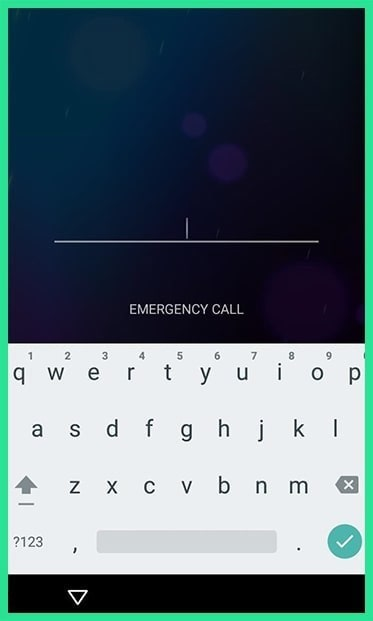
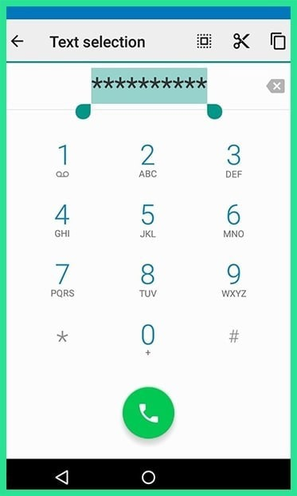
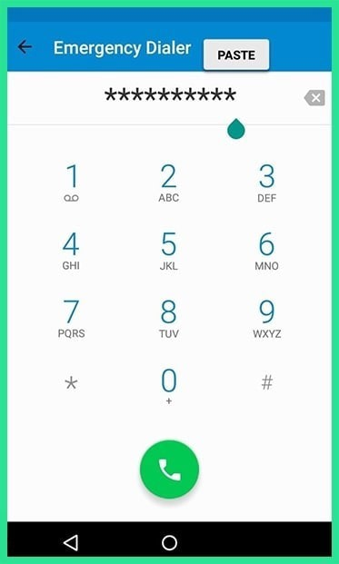
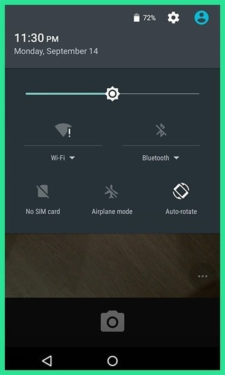
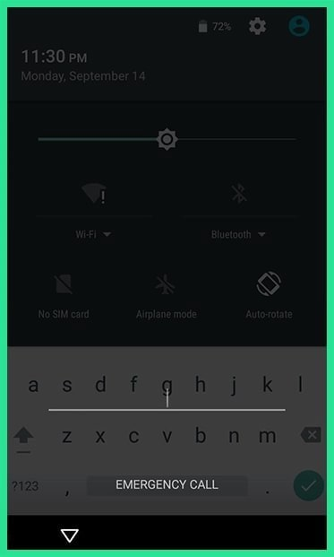
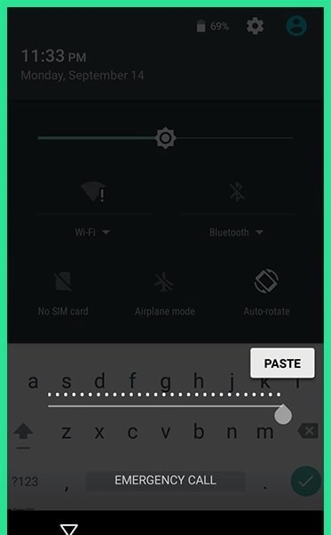

Finally, if your device is encrypted and running Android 5.0-5.1.1, there's a way to get around the password lock screen. This method won't work on any other type of secure lock screen, but it's a lifesaver if you forgot your password. First, tap the "Emergency Call" option on your lock screen, then use the dialer interface to enter 10 asterisks. From here, double-tap the field to highlight the entered text and choose "Copy," then paste it into the same field to essentially double the amount of entered characters. Repeat this same process of copying and pasting to add more characters until double-tapping the field no longer highlights the characters.
  
Next, head back to the lock screen and open the camera shortcut. From here, pull down the notification shade and tap the Settings icon, then you'll be prompted to enter a password. Long-press the input field and choose "Paste," then repeat this process several more times. Eventually, after you've pasted enough characters into the field, your lock screen will crash, which will allow you to access the rest of your phone's interface.

 